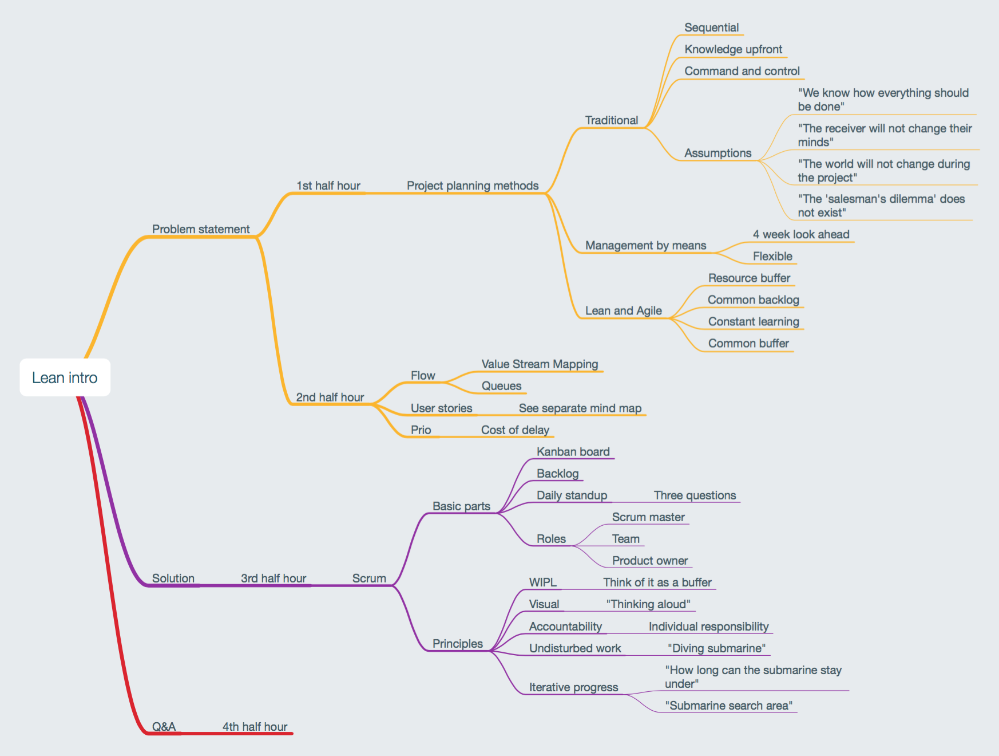
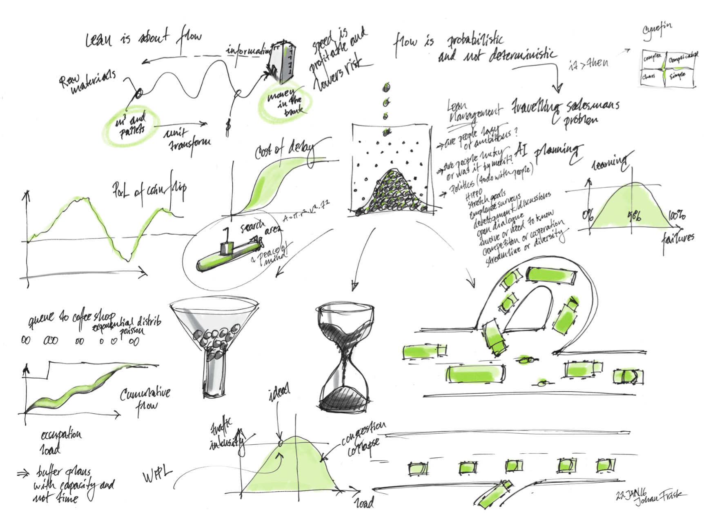
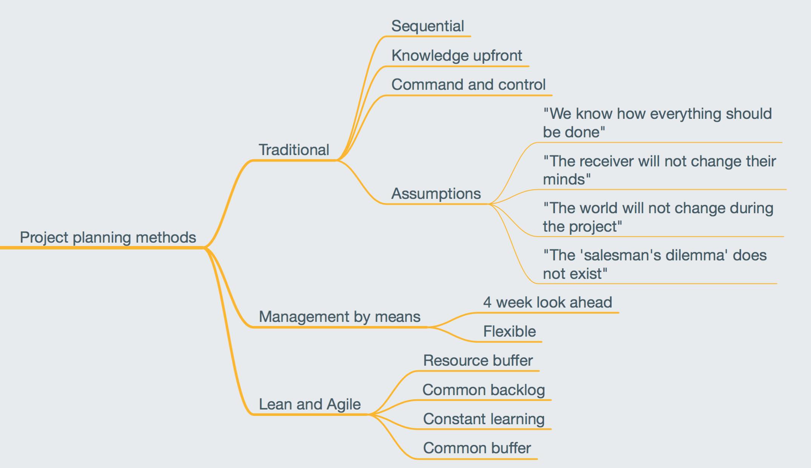
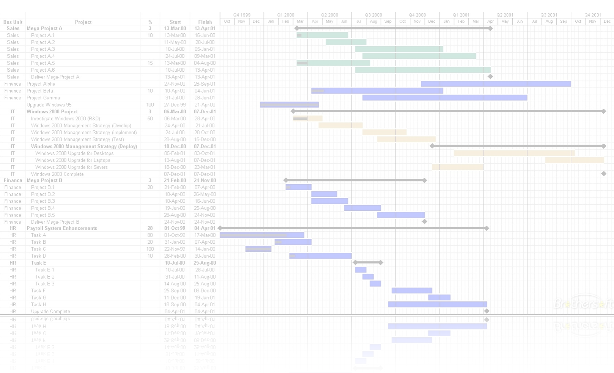
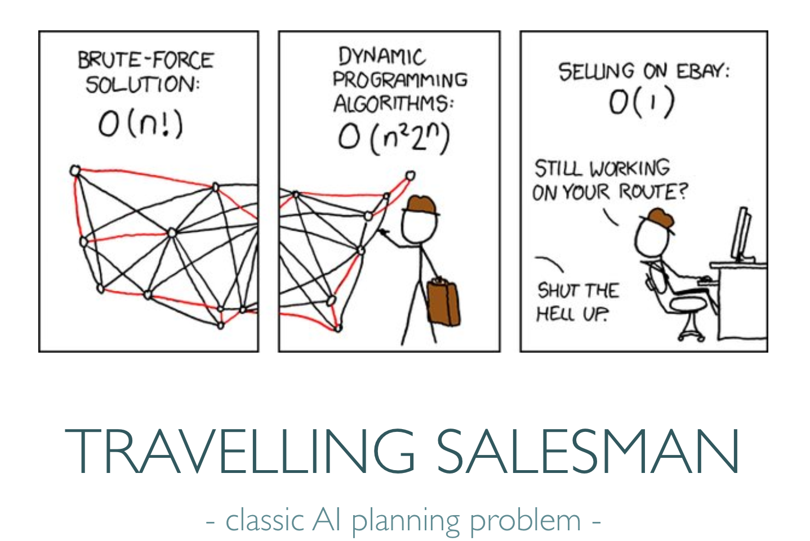

Lean Intro
- secrets revealed -
written by Johan Frisk© 2016

this is the agenda for a two-hour session

this is the A3, the figures will be explained in the slides, don't worry :-)
How to use this presentation
The objective of this presentation is to go through some Lean core beliefs and pinpoint the differences between Lean in factory and development environments.
Navigate in these four ways:
- If you go horisonally to the right you will see the slides in sequence.
- If you go down on any step you will find a written instruction and,
- if you hit 'esc' you will see a navigational view of all the slides.
- If you press 's' anywhere you come to the presenter's window.

Let's start from the beginning with project planning
Traditional projekt planning
spoiler: this is not the most efficient way of doing things!

Discuss with your neighbour: How do you plan today?

Things are complicated...